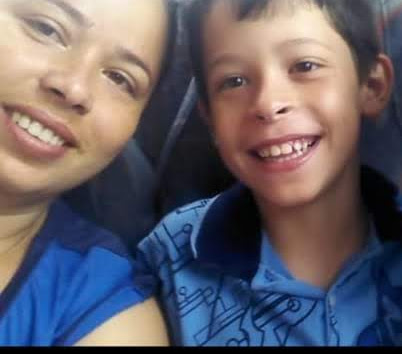

Qual sua melhor lembrança?
Minha melhor lembrança foi quando eu comecei a dar produção na empresa ASTRA, eu andava desanimado pois não conseguia bater a meta, mas depois de muito esforço comecei a bater meta e fiquei muito feliz porque percebi que conseguia fazer tudo. (Essa música apesar da letra, eu acabei viciando por conta que o estoquista ficava cantando direto). Música
Viajar por todo o mundo ou ler todos os livors?
Viajar todo o mundo sem sombras de dúvida. Música
Quem é a pessoa que te conhece melhor? Essa é a mesma pessoa que você conhece melhor?
Essa pessoa é a minha mãe e ela é a pessoa que eu mais conheço. Música
Um dia mágico está chegando e nesse dia você poderá ter três horas a mais nesse dia. Você pode escolher o dia. Que dia você escolheria e o que você faria com esse dia?
Eu escolheria o dia que iremos na Oracle porque é a dona da linguagem Java (linguagem que eu estou mais afim de aprender), no dia eu vou aproveitar o máximo dessa experiencia única. Música
Se você pudesse fazer as outras pessoas acreditarem em algo que você acredita, o que seria?
Faria as pessoas acreditarem que eu sou grandão (musculoso). Música